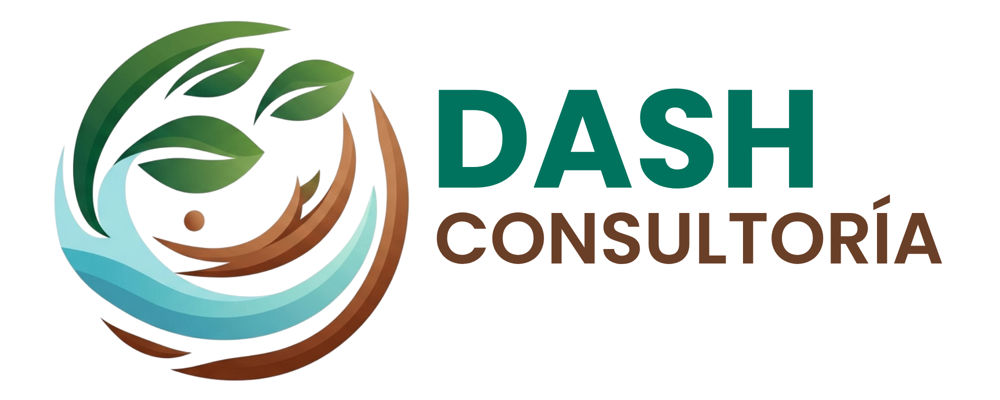

DASH MÉXICO

No solo gestionamos trámites; aseguramos la "licencia para operar" de tu organización mediante soluciones de ingeniería de vanguardia.
Alineamos la operación con estándares globales para fortalecer la reputación y el acceso a mercados exigentes.
El conocimiento es la base del cambio. Ofrecemos experiencias formativas que transforman la cultura organizacional.
Colaboramos con gobiernos para crear instrumentos normativos técnica de excelencia y socialmente legítimos.
Hablemos de cómo transformar tus retos normativos en una estrategia de éxito.
Iniciar conversación